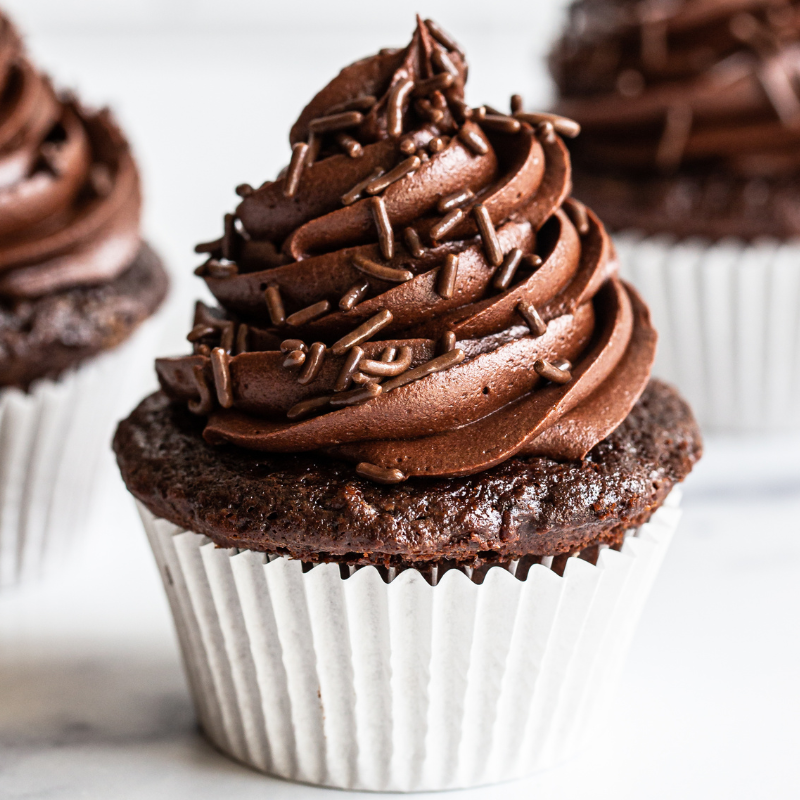
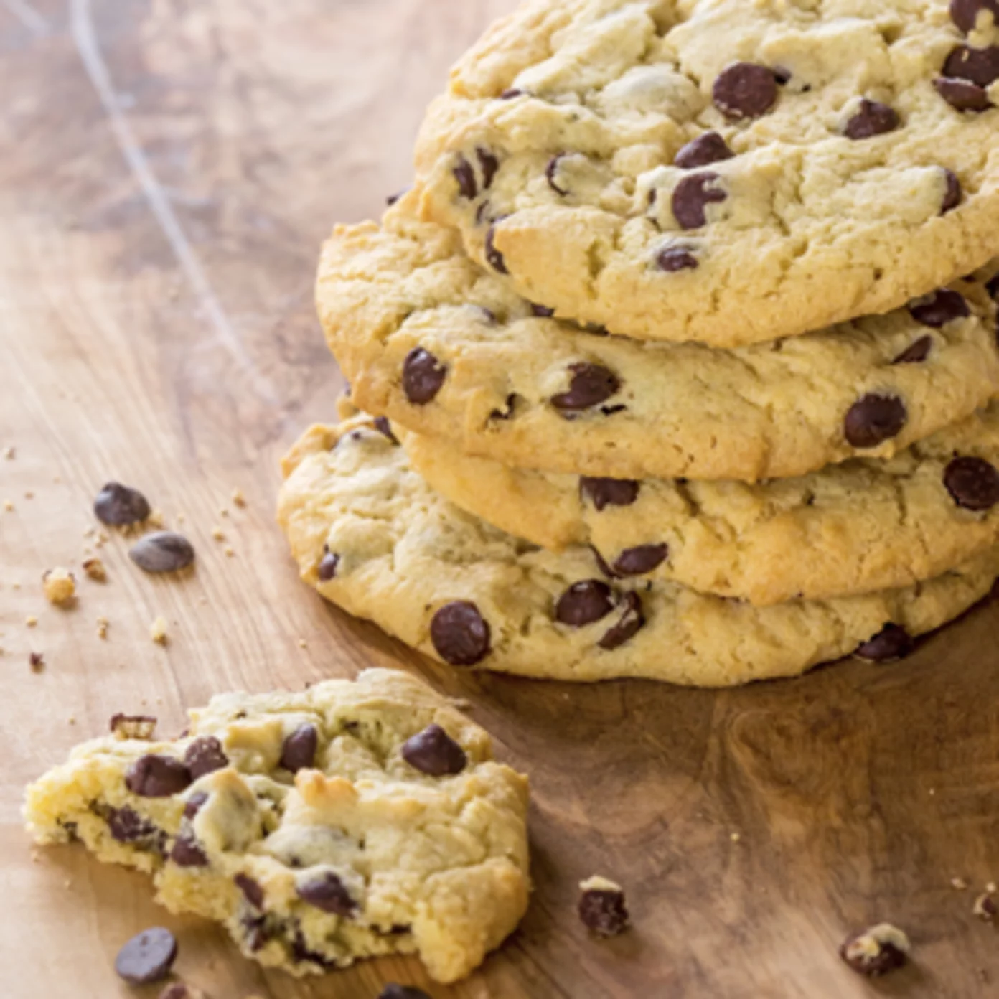
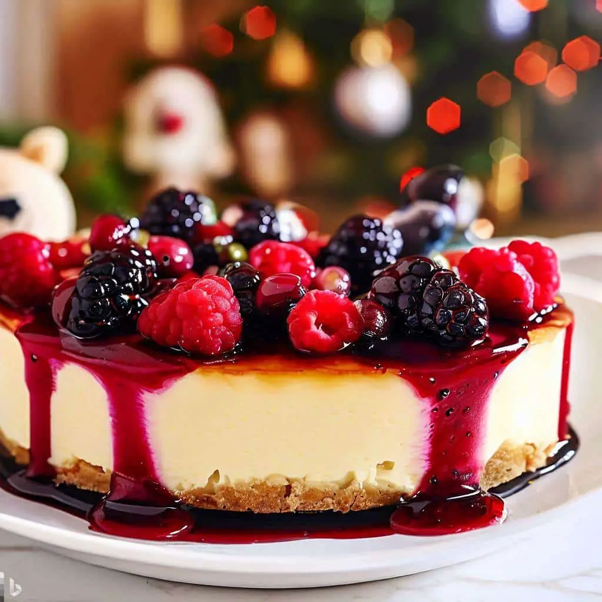

Cupcake
- 3 colheres (sopa) de manteiga amolecida
- 2 colheres (sopa) de cacau em pó
- ¾ de xícara (chá) de açúcar
- ¾ de xícara (chá) de farinha de trigo
- 1½ colher (chá) de fermento em pó
- 1 pitada de sal
- 1 ovo
- ½ xícara (chá) de leite
Modo de preparo:
Preaqueça o forno a 180 ºC (temperatura média).
Coloque 12 forminhas de papel próprias para assar (não precisa untar) dentro da fôrma de cupcake.
Na batedeira, coloque a manteiga, o cacau em pó, o açúcar, a farinha, o fermento e o sal.
Atenção: a manteiga deve estar em ponto de pomada.
Retire da geladeira com antecedência e deixe sobre o forno para começar a amolecer.
Na velocidade baixa, bata até que fique com textura de areia úmida.
Numa tigela, bata o ovo com o batedor de arame e em seguida misture o leite.
Acrescente metade dessa mistura à batedeira e aumente a velocidade ao máximo até que a massa fique lisa e cremosa.
Diminua a velocidade e junte o restante do líquido aos poucos, até incorporar totalmente.
Transfira a massa para um saco de confeitar sem bico e preencha ¾ de cada forminha.
Leve ao forno para assar por cerca de 35 minutos.
Faça o teste do palito: insira um na massa, se sair limpo está pronto.
Preaqueça o forno a 180 ºC (temperatura média).
Coloque 12 forminhas de papel próprias para assar (não precisa untar) dentro da fôrma de cupcake.
Na batedeira, coloque a manteiga, o cacau em pó, o açúcar, a farinha, o fermento e o sal.
Atenção: a manteiga deve estar em ponto de pomada.
Retire da geladeira com antecedência e deixe sobre o forno para começar a amolecer.
Na velocidade baixa, bata até que fique com textura de areia úmida.
Numa tigela, bata o ovo com o batedor de arame e em seguida misture o leite.
Acrescente metade dessa mistura à batedeira e aumente a velocidade ao máximo até que a massa fique lisa e cremosa.
Diminua a velocidade e junte o restante do líquido aos poucos, até incorporar totalmente.
Transfira a massa para um saco de confeitar sem bico e preencha ¾ de cada forminha.
Leve ao forno para assar por cerca de 35 minutos.
Faça o teste do palito: insira um na massa, se sair limpo está pronto.

Cookies
- 125 g de manteiga sem sal em temperatura ambiente
- 1/2 xícara de açúcar mascavo
- 1 e 3/4 de xícara de farinha de trigo
- 300 g de chocolate meio amargo picado
- 3/4 xícara de açúcar
- 1 colher (chá) de fermento em pó
- 1 ovo
- 1 colher (chá) de essência de baunilha
Modo de preparo:
Preaqueça o forno a 180 ºC (temperatura média).
Misture a manteiga, açúcar mascavo, açúcar e essência de baunilha.
Adicione o ovo batido aos poucos e misture bem.
Acrescente a farinha aos poucos e misture bem.(pode ser na mão ou na batedeira)
Por último, adicione o fermento e misture só para incorporá-lo à massa.
Depois da massa bem misturada, adicione o chocolate picado.
Forme bolinhas pequenas e asse em forno preaquecido, sobre papel manteiga, por aproximadamente 15 a 20 minutos (250° C).
Preaqueça o forno a 180 ºC (temperatura média).
Misture a manteiga, açúcar mascavo, açúcar e essência de baunilha.
Adicione o ovo batido aos poucos e misture bem.
Acrescente a farinha aos poucos e misture bem.(pode ser na mão ou na batedeira)
Por último, adicione o fermento e misture só para incorporá-lo à massa.
Depois da massa bem misturada, adicione o chocolate picado.
Forme bolinhas pequenas e asse em forno preaquecido, sobre papel manteiga, por aproximadamente 15 a 20 minutos (250° C).

Cheesecake
- Massa
- 250 g de biscoito de maisena de chocolate
- 80 g de manteiga
Modo de preparo:
Triture os biscoitos usando um liquidificador ou processador.
Coloque a manteiga e amasse com as mãos, para incorporar a manteiga ao biscoito.
Para finalizar, molde a massa no fundo da forma removível e reserve.
Triture os biscoitos usando um liquidificador ou processador.
Coloque a manteiga e amasse com as mãos, para incorporar a manteiga ao biscoito.
Para finalizar, molde a massa no fundo da forma removível e reserve.
- Recheio
- 600 g de cream cheese
- 160 g de iogurte grego
- 150 g de açúcar de confeiteiro
- 1 colher de chá de extrato de baunilha
Modo de preparo:
Misture todos os ingredientes com fuê.
Coloque na forma e leve para a geladeira até firmar.
Misture todos os ingredientes com fuê.
Coloque na forma e leve para a geladeira até firmar.
- Calda
- 1 xícara de 200 ml de polpa de amora
- 1/2 xícara de 200 ml de açúcar
Modo de preparo:
Misture e deixe ferver em uma panela por 5 minutos.
Deixe esfriar e coloque por cima da sobremesa, enfeite com frutas vermelhas se preferir.
Misture e deixe ferver em uma panela por 5 minutos.
Deixe esfriar e coloque por cima da sobremesa, enfeite com frutas vermelhas se preferir.